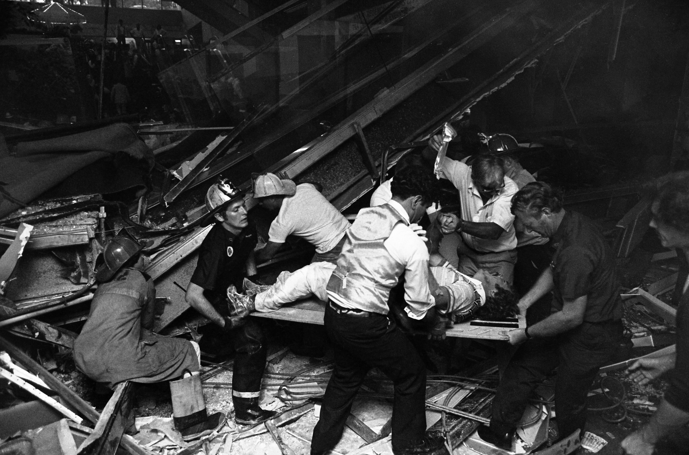

THE HYATT REGENCY WALKWAY COLLAPSE
Category: Engineering Disaster (Structural Failure) A Night of Celebration Turns Fatal: On the evening of July 17, 1981, the lobby of the newly opened Hyatt Regency Hotel in Kansas City, Missouri, was packed with over 1,600 people attending a lively tea dance. Above the crowded dance floor hung a series of floating walkways. Dozens of partygoers were standing on the suspended second- and fourth-floor walkways, watching the festivities below. Suddenly, a loud crack echoed through the atrium. The fourth-floor walkway gave way, crashing directly onto the second-floor walkway beneath it, and sending both plunging onto the crowded lobby floor in a devastating tangle of steel and concrete.

/>Fatal Modification: The root cause of the collapse was a seemingly minor, hastily approved change made during the construction phase. The original engineering design called for a single set of long, continuous steel tie rods to suspend both the second and fourth-floor walkways directly from the ceiling. However, the steel fabricator objected, arguing that manufacturing and installing continuous rods of that length was impractical and easily damaged. They proposed a modified design using two separate sets of shorter rods: one connecting the ceiling to the fourth floor, and a second set connecting the fourth floor down to the second.
The Invisible Burden: What the engineers failed to calculate when they approved this change was that the new design fundamentally altered the physics of the structure. Under the modified system, the box beams of the fourth-floor walkway had to support not only its own weight and passengers but also the entire weight of the second-floor walkway hanging directly beneath it. This essentially doubled the load on the fourth-floor connections, pushing them far past their intended capacity and directly leading to the catastrophic failure.
Key Facts
Date: July 17, 1981
Location: Kansas City, Missouri
Casualties: 114 dead, 216 severely injured; led to major national reforms in engineering ethics and structural review processes.
Cause: A critical design modification to the suspension rods that doubled the structural load on the walkway's connections, compounded by a total failure in engineering oversight and communication.
Lesson: The Hyatt Regency collapse remains one of the deadliest accidental structural failures in U.S. history. It serves as the ultimate cautionary tale in structural engineering, highlighting the extreme dangers of poor communication between design engineers and construction contractors. The disaster resulted in the lead engineers losing their professional licenses and sparked sweeping, nationwide reforms in engineering ethics. It permanently cemented the rule that the engineer of record must take absolute responsibility for meticulously reviewing and approving all shop drawings and construction modifications, no matter how minor they seem.